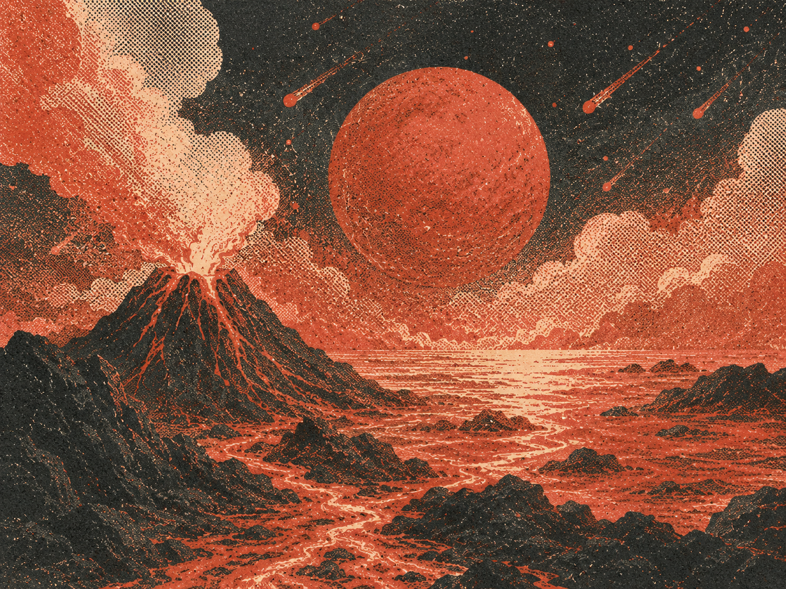
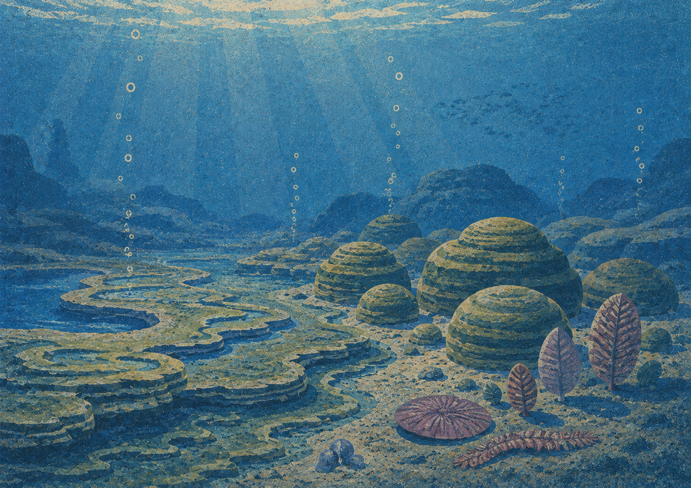

Hadean Eon Катархей
4567 – 4031 Myafrom Greek Hádēs (the underworld)
Precambrian Supereon. Everything in this eon it is inferred, not observed.
- Earth formed;
- Surface of Earth was unstable, the mantle continually brought molten rock upward;
- Ends with appearing of solid rock.

Archean Eon Архей
4031 – 2500 Myafrom Greek arkhḗ (origin)
Precambrian Supereon.
- Starts with forming of rock and the first continents;
- Primitive atmosphere and oceans emerge. The atmosphere was mostly methane and ammonia — unbreathable by nearly everything alive today;
- The first living organisms — bacteria — appeared.
Proterozoic Eon Протерозой
2500 – 538 Myafrom Greek próteros (former) + zōḗ (life)
Precambrian Supereon.
- Continents stabilized and grew, though unrecognizable against today's map;
- Oxygen accumulated in the atmosphere for the first time;
- Bacteria, fungi, simple plants, and the first animals evolved.

Phanerozoic Eon Фанерозой
538 Mya – todayfrom Greek phanerós (visible) + zōḗ (life)
Photosynthetic plants appeared, releasing free oxygen at scale for the first time.
Paleozoic Era
538 – 252 MyaContinents drifted and eventually collided into one supercontinent, Pangaea.
- Cambrian
- Ordovician
- Silurian
- Devonian
- Carboniferous
- Permian
Mesozoic Era
252 – 66 MyaThe Age of Reptiles.
Dinosaurs rose to dominate land, sea, and air.
- Triassic
- Jurassic
- Cretaceous
Cenozoic Era
66 Mya – todayThe Age of Mammals.
- Paleogene
- Neogene
- Quaternary